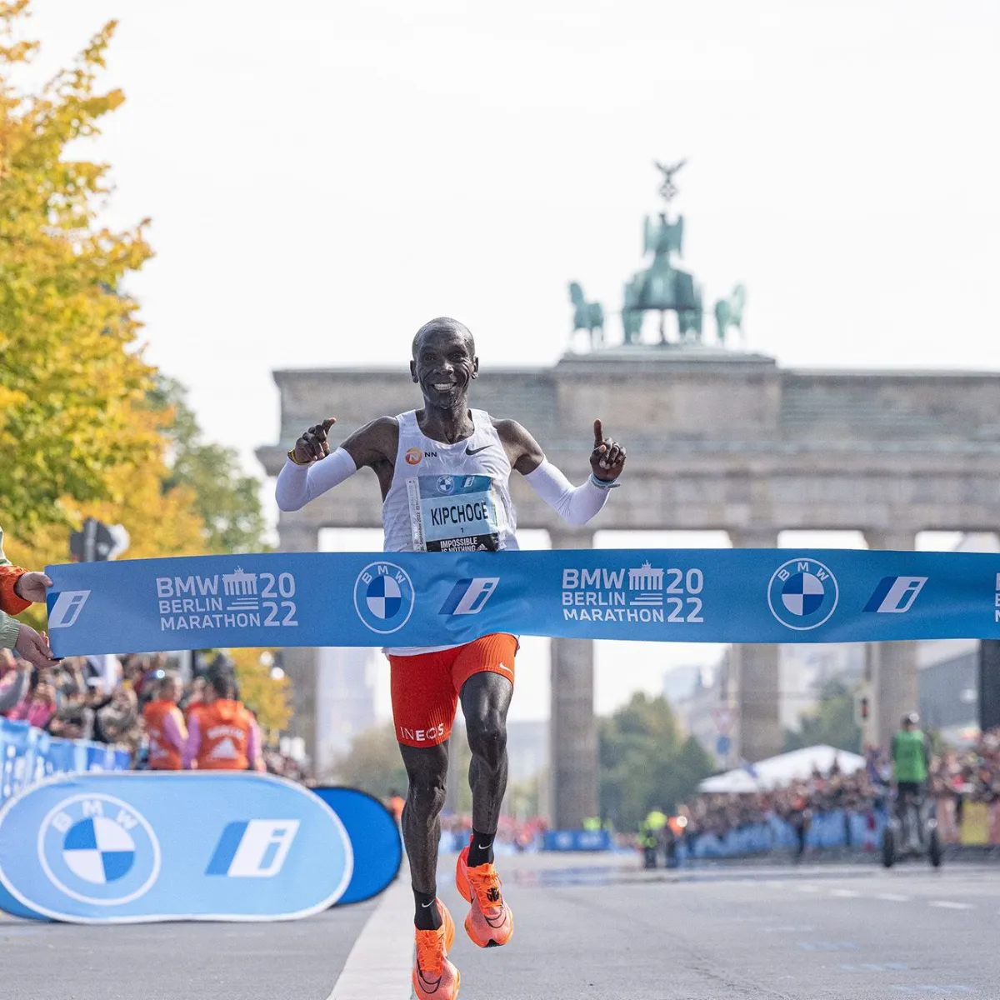
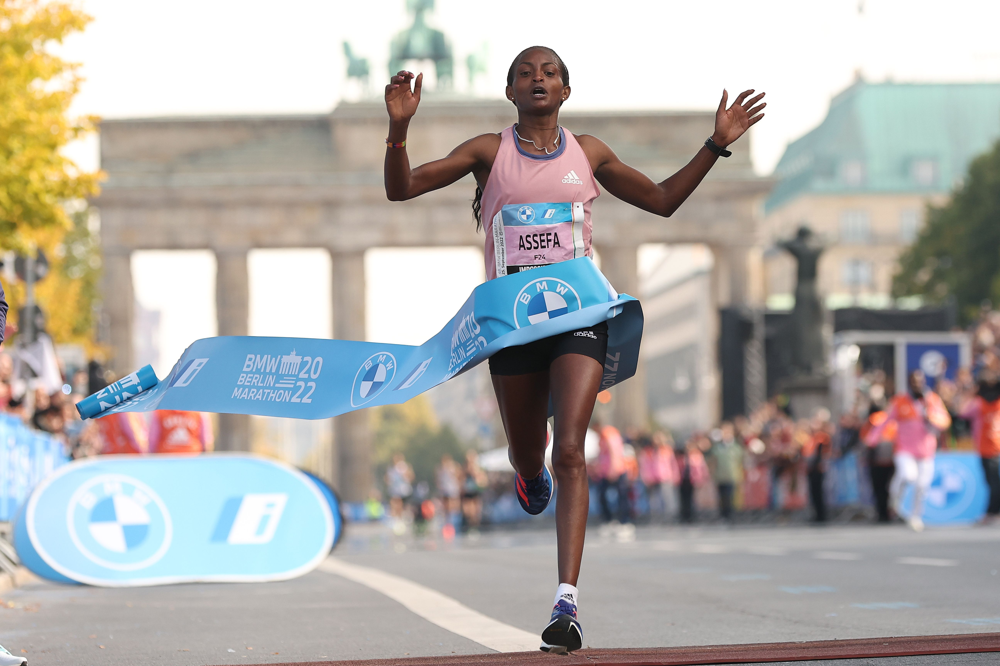

Maratona Masculina: Eliud Kipchoge (Quênia) é o recordista mundial com 2h01min09s (Berlim, 2022).  Maratona Feminina: Tigist Assefa (Etiópia) marcou 2h11min53s (Berlim, 2023).  Meia-maratona Masculina: Jacob Kiplimo (Uganda), 57min31s (Lisboa, 2021). Meia-maratona Feminina: Letesenbet Gidey (Etiópia), 1h02min52s (Valência, 2021). Maior maratona do mundo: A Maratona de Nova York reúne mais de 50 mil corredores todos os anos.